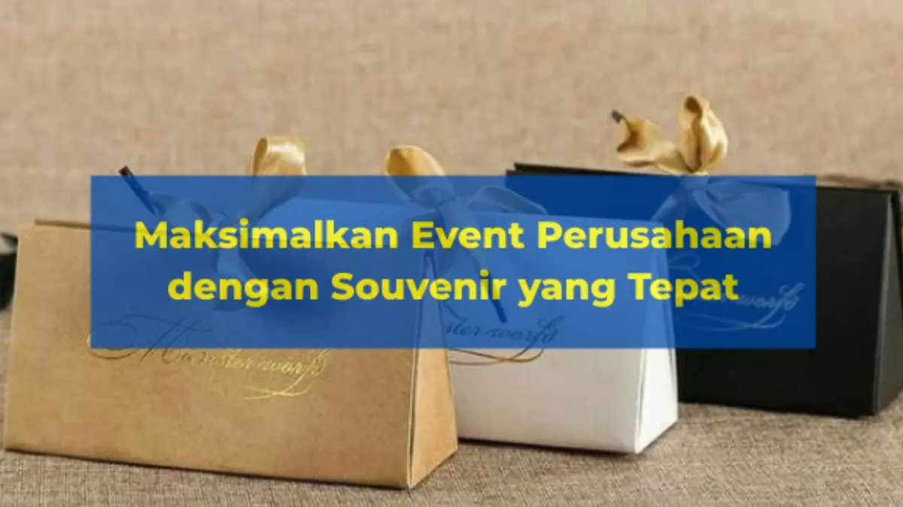

Corporate Gifts ID - Souvenir perusahaan adalah elemen strategis yang krusial untuk memaksimalkan kesuksesan berbagai event bisnis, mulai dari seminar, gathering, hingga pameran. Pemberian souvenir kantor yang tepat dan fungsional terbukti secara efektif mampu meningkatkan brand awareness, membangun hubungan profesional yang kuat, dan menciptakan pengalaman positif yang berkesan di benak peserta maupun klien.
Event perusahaan bukan sekadar agenda pertemuan formal tahunan. Momen tersebut merupakan panggung representasi nilai organisasi di hadapan stakeholder strategis. Ketika peserta membawa pulang benda fisik bernilai guna tinggi dengan sentuhan visual yang apik, ikatan emosional terhadap korporasi akan bertahan jauh melampaui durasi acara itu sendiri.
Poin Kunci Souvenir Event Perusahaan:
- Investasi Komunikasi Brand: Cinderamata fisik mentransformasikan interaksi satu arah menjadi memori jangka panjang di meja kerja audiens.
- Kesesuaian Target Audiens: Membedakan segmentasi hadiah untuk peserta pameran publik, peserta seminar edukatif, hingga tamu VIP perbankan/BUMN.
- Nilai Guna Harian: Memprioritaskan item berdaya pakai tinggi seperti tumbler tahan karat, notebook kulit, dan powerbank berkapasitas stabil.
- Momen Penyerahan Terencana: Distribusi terstruktur melalui welcome kit registrasi, door prize interaktif, atau thank you gift eksklusif.
Pentingnya Souvenir dalam Event Perusahaan
Setiap anggaran yang dialokasikan untuk souvenir acara harus dihitung sebagai instrumen pemasaran yang terukur. Tiga peran utama souvenir pada perhelatan bisnis meliputi:
- Meningkatkan Brand Awareness: Souvenir membawa identitas perusahaan secara fisik ke tangan peserta, membuat brand lebih mudah diingat dalam aktivitas kerja sehari-hari.
- Menciptakan Pengalaman Positif: Hadiah fungsional yang dikemas rapi meninggalkan kesan profesional dan wujud kepedulian nyata perusahaan terhadap para peserta.
- Membangun Loyalitas & Engagement: Peserta merasa dihargai secara personal, yang secara psikologis memicu interaksi bisnis yang jauh lebih hangat dan kolaboratif pasca-acara.
Kriteria Souvenir yang Efektif untuk Event Perusahaan
Agar tidak berakhir sebagai barang yang terlupakan atau terbuang sia-sia di laci, perhatikan 4 kriteria seleksi produk berikut:
- Relevan dengan Tema Acara: Souvenir yang mendukung konsep acara jauh lebih berkesan. Misalnya, memberikan tumbler stainless steel ramah lingkungan untuk event korporat bertema sustainability (ESG).
- Bermanfaat & Tahan Lama: Produk yang sering dipakai sehari-hari, seperti tumbler insulasi vakum, tas jinjing kanvas, atau flashdisk kartu custom, akan terus mengingatkan pengguna tentang institusi Anda.
- Desain Eksklusif & Branding Elegan: Perpaduan palet warna harmonis dan penempatan logo proporsional membuat cinderamata terlihat mewah tanpa terkesan sebagai media iklan murahan.
- Memperhatikan Target Audiens: Sesuaikan kelas souvenir. Mitra bisnis dan jajaran direksi membutuhkan barang eksklusif berkotak magnetik, sementara audiens massal pameran cocok dengan merchandise fungsional praktis.

Strategi distribusi cinderamata kantor saat registrasi, sesi seminar, dan malam puncak perayaan perusahaan.
Contoh Souvenir yang Tepat untuk Berbagai Jenis Event
Berikut rekomendasi kurasi paket merchandise berdasarkan klasifikasi agenda korporasi:
- Seminar atau Workshop Resmi: Notebook jilid kulit sintetis, pulpen logam grafir nama, flashdisk kartu, dan goodie bag spunbond tebal.
- Gathering Karyawan & Family Day: Kaos polo seragam, topi bordir, botol minum tumbler olahraga, atau handuk micro-fiber bertema kebersamaan.
- Pameran Industri atau Expo B2B: Tote bag kanvas reusable, tali lanyard cetak sublimasi dua sisi, gantungan kunci serbaguna, dan pouch gadget mini.
- Event Eksklusif Klien VIP & RUPS: Gift set 3-in-1 berbalut hardbox mewah, wireless charger meja, pulpen metal bersepuh emas, atau jam meja kristal.
Strategi Distribusi Souvenir agar Event Lebih Berkesan
Cara menyerahkan souvenir memegang peranan besar dalam membangun antusiasme peserta:
- Paket Welcome Kit: Dibagikan langsung di meja registrasi awal untuk memberikan first impression yang hangat dan memicu rasa penasaran terhadap materi acara.
- Door Prize & Hadiah Kuis: Item bernilai tinggi diberikan kepada pemenang undian atau peserta paling aktif guna menjaga energi ruangan tetap bersemangat.
- Thank You Gift di Pintu Keluar: Penyerahan souvenir saat sesi penutupan menciptakan penutup manis (peak-end rule) yang membekas kuat di ingatan.
- Interactive Branding Booth: Menyediakan sudut khusus penukaran suvenir melalui scan barcode atau tantangan unggah foto di media sosial untuk melipatgandakan eksposur digital.
Matriks Pemilihan Souvenir Berdasarkan Jenis Event Perusahaan
Gunakan panduan matriks di bawah ini saat menyusun Rencana Anggaran Biaya (RAB) pengadaan suvenir acara Anda:
| Tipe Event | Karakteristik Audiens | Rekomendasi Produk | Tujuan Utama Branding |
|---|---|---|---|
| Pameran / Expo Publik | Massal, Pengunjung Terbuka | Tote Bag Blacu, Lanyard, Kipas Promosi | Jangkauan Luas & Pengenalan Nama |
| Seminar & Workshop | Profesional, Mahasiswa, Praktisi | Notebook Kulit, Pulpen Metal, Flashdisk | Fungsionalitas Belajar & Kredibilitas |
| Gathering Perusahaan | Karyawan Internal & Keluarga | Tumbler Insulasi, T-Shirt, Pouch Santai | Kekompakan Tim & Rasa Memiliki |
| Pertemuan VIP / RUPS | Pemegang Saham, Dewan Direksi, Mitra | Gift Set Hardbox, Powerbank Wireless, Jam Meja | Prestise Korporat & Kemitraan Jangka Panjang |
Dampak Positif Souvenir yang Tepat terhadap Event
Ketika eksekusi souvenir dilakukan dengan matang, korporasi akan memetik keuntungan strategis:
- Membuat keseluruhan rangkaian acara menjadi lebih bermakna dan bernilai tinggi di mata tamu undangan.
- Meningkatkan visibilitas merek di ruang kerja audiens hingga berbulan-bulan pasca-acara.
- Mendorong retensi kehadiran peserta untuk agenda pertemuan maupun program pelatihan di masa mendatang.
- Memicu publikasi organik melalui postingan media sosial para peserta (User Generated Content).
FAQ tentang Souvenir Event Perusahaan
Kesimpulan
Souvenir bukan sekadar hadiah seremonial cuma-cuma; melainkan instrumen komunikasi dan investasi reputasi korporasi yang sangat berdaya guna. Melalui perancangan konsep yang matang, seleksi material bermutu, serta teknik kustomisasi logo yang elegan, setiap cinderamata akan memancarkan citra unggul organisasi Anda di setiap event.
Konsultasikan rancangan souvenir gathering, seminar kit, dan cinderamata expo perusahaan Anda bersama tim kurator kami untuk memperoleh pilihan paket terbaik yang tepat guna dan sesuai anggaran operasional.